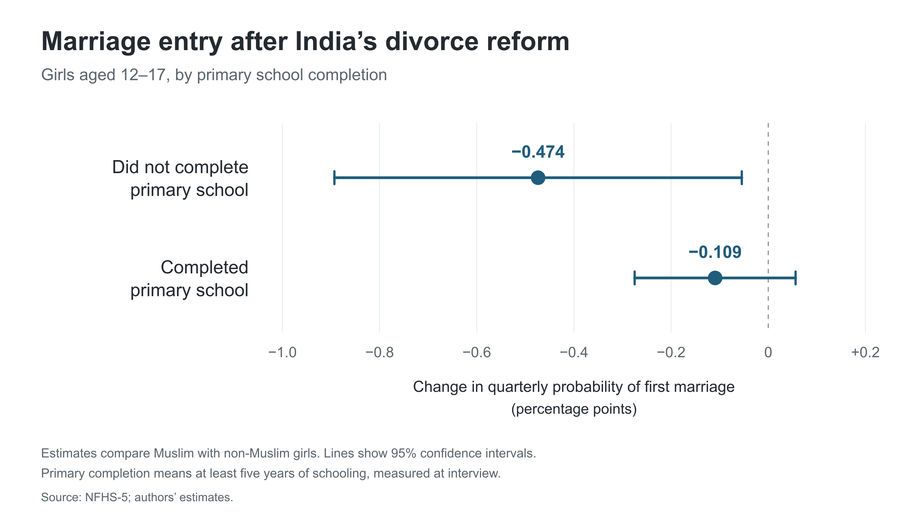
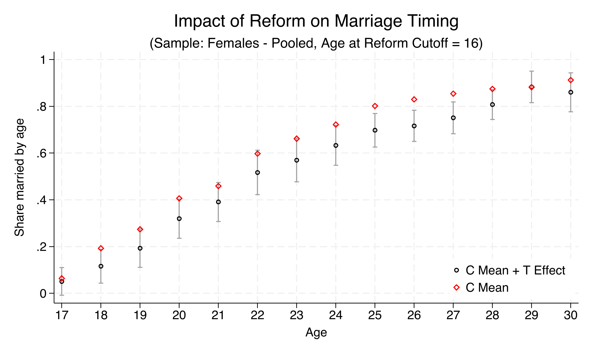
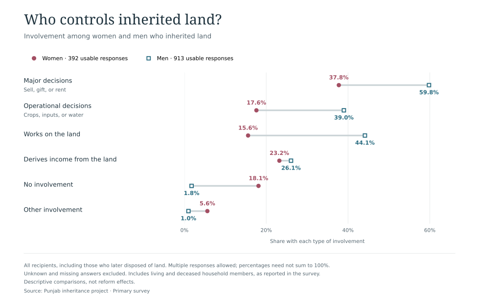

01 / Family law · India
Marriage entry
First-marriage entry falls most clearly among girls aged 12–17 without primary schooling.
Job market paper
With Rounak Bose.
Selected figures from my research with co-authors on marriage and inheritance.
01 / Family law · India
First-marriage entry falls most clearly among girls aged 12–17 without primary schooling.
Job market paper
With Rounak Bose.
02 / Inheritance · Pakistan
We examine how land-record reform affects marriage timing in Punjab, Pakistan.
Research project
With Sabrin Beg, Erica Field, Jeremy Lebow, Kate Vyborny, and Suzanna Khalifa.
03 / Inheritance · Pakistan
Women who inherit land are less involved than men in decisions about its use.
Research project
With Sabrin Beg, Erica Field, Jeremy Lebow, Kate Vyborny, and Suzanna Khalifa.